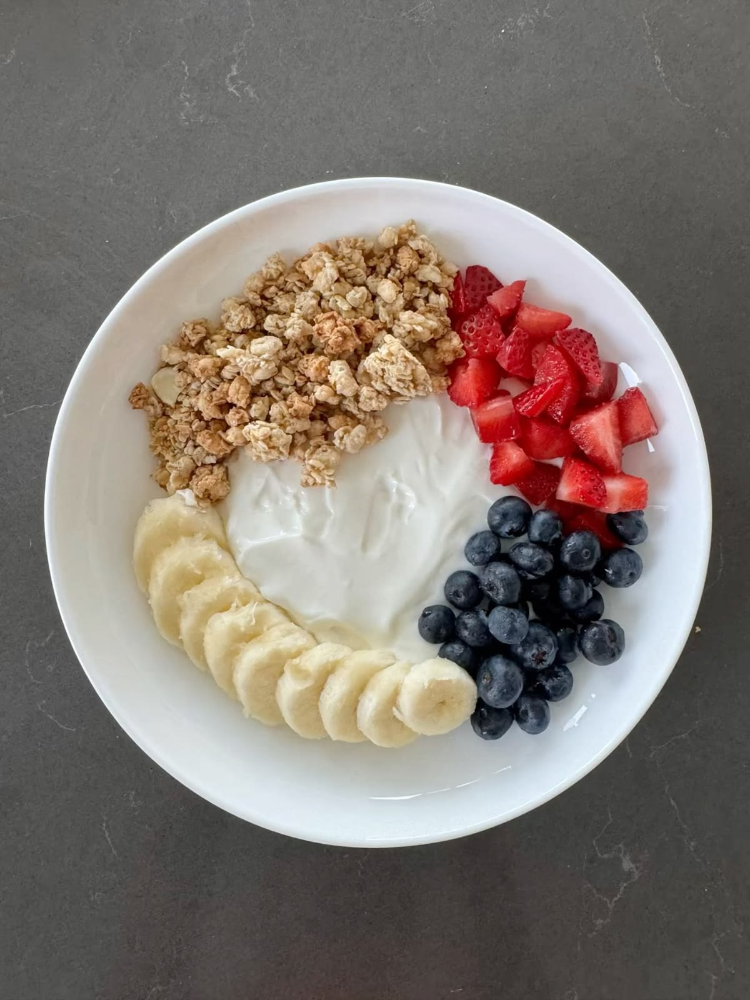

Fruit and Yogurt Bowl
A simple bowl of creamy yogurt, fresh fruit, and crunchy granola.

Ingredients
- 150 grams of plain yogurt
- 1/2 cup of washed, chopped fruit
- 1/4 cup of granola
Equipment
- Bowl
- Spoon
- Measuring cup
Instructions
- Spoon the yogurt into a bowl.
- Add the prepared fruit.
- Sprinkle the granola over the top.
- Serve immediately so the topping stays crunchy.
Ingredient Notes
Check the yogurt and granola labels for allergens. Choose ingredients that suit your dietary needs.
Make It Your Own
Try a different fruit combination or serve the granola on the side.